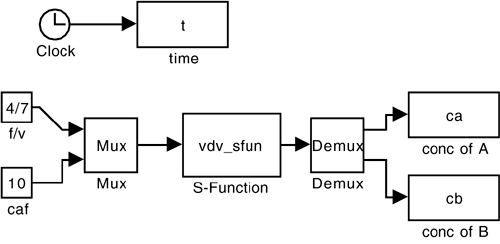

| [ Team LiB ] |
|
M3.3 SIMULINK sfun (.mdl Files)One of the powers of SIMULINK is the ability to construct block diagrams that provide an intuitive approach to simulating feedback-control systems. Often we use linear transfer functions to simulate the behavior of linear systems. A block titled "sfun" can obtained from the "nonlinear" library in SIMULINK and placed in a SIMULINK diagram. When simulations are performed, the equations in the sfun m-file are solved simultaneously with other blocks in the block diagram. The sfun file must be given a name with a '.m' extension, while the block diagram is given a '.mdl' extension. Example M3.2: Van de Vusse ReactionThe van de Vusse reactor from Example M3.1 is studied here. The block diagram shown in Figure M3-2 was first generated. Notice that there are two inputs and two outputs shown; mux and demux blocks are used since inputs and outputs are passed to and returned from S-Functions as vectors. Notice that the S-Function has been titled vdv_sfun.m. The SIMULINK block diagram should also be titled and given a .mdl extension. Figure M3-2. SIMULINK diagram for an open-loop simulation of the van de Vusse reactor. The vdv_sfun function file is shown below. The vectors 't', 'x', and 'u' contain time, states, and inputs, respectively. The 'flag' parameter is passed from SIMULINK, depending on the simulation status. A value of flag = 0, for example, sets up the simulation with information about the number of states, and so forth. A value of flag = 1 solves for the derivatives of the states with respect to time and passes these derivatives in the sys vector back to SIMULINK. A value of flag = 3 passes the values of the outputs back to SIMULINK through the sys vector. Before running the simulation, double click on the S-Function block to see what parameters or initial conditions must be set before the simulation. In this case, the initial conditions must be set in the MATLAB Workspace, using the xi variable. Also, go to the "parameters" pull-down menu in SIMULINK to set the final time for integration and the differential equation solution method. For the simulation shown, enter » x0 = [2;1.117] to obtain the same plot shown in Figure M3-1.
function [sys,x0,str,ts] = vdv_sfun(t,x,u,flag,x0)
%
% Solves the two differential equations modeling
% the van de vusse reaction
% scheme in an isothermal CSTR. The states are the concentration
% of A and B in the reactor.
%
% Use this as an sfun function in a simulink diagram
%
% 23 Jan 99
% b.w. bequette
% process condition:
% dilution rate (fov) = 4/7;
% feed concentration of a (caf) = 10;
% x1s = cas = 3.0;
% x2s = cbs = 1.117;
% x0 = [x1i;x2i] = [cai;cbi] = initial conditions;
switch flag
case 0 % initialization;
sizes = simsizes;
sizes.NumContStates = 2;
sizes.NumDiscStates = 0;
sizes.NumOutputs = 2;
sizes.NumInputs = 2;
sizes.DirFeedthrough = 0;
sizes.NumSampleTimes = 1;
sys = simsizes(sizes);
str = [];
ts = [0 0];
case 1 % derivatives;
% it is convenient to use common notation for states
ca = x(1);
cb = x(2);
% also, the inputs are
fov = u(1);
caf = u(2);
% parameter values
k1 = 5/6; % rate constant for A-->B (min^-1)
k2 = 5/3; % rate constant for B-->C (min^-1)
k3 = 1/6; % rate constant for 2A-->D (mol/(l min))
% state derivatives
dcadt = fov*(caf-ca) - k1*ca -k3*ca*ca;
dcbdt = -fov*cb + k1*ca - k2*cb;
sys = [dcadt;dcbdt];
case 3 % outputs;
sys = [x(1);x(2)];
case {2, 4, 9}
sys = [];
otherwise
error(['unhandled flag = ',num2str(flag)]);
end
|
| [ Team LiB ] |
|